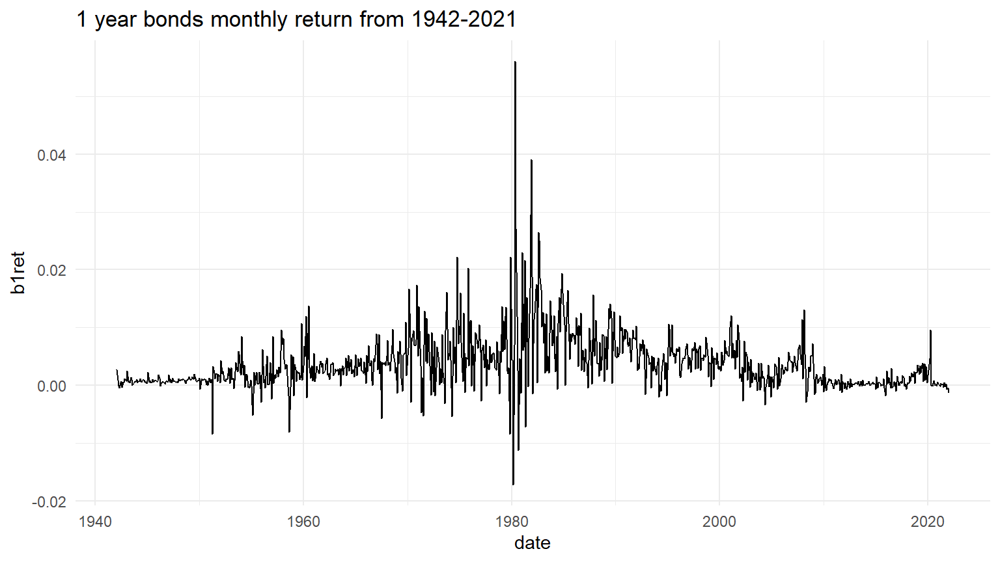
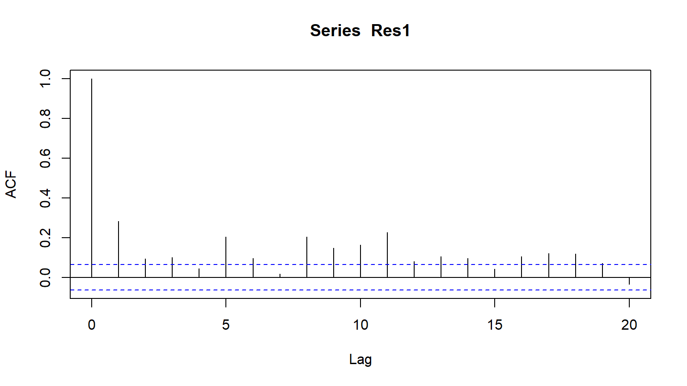
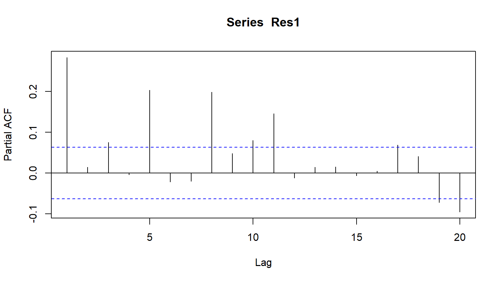
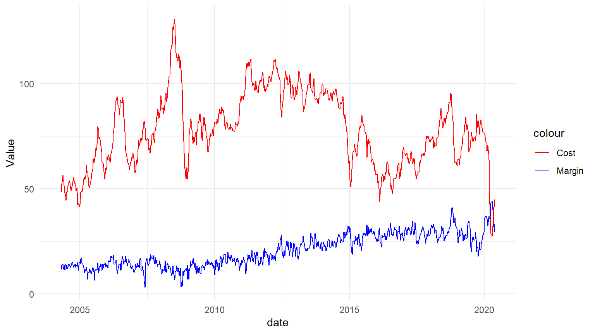
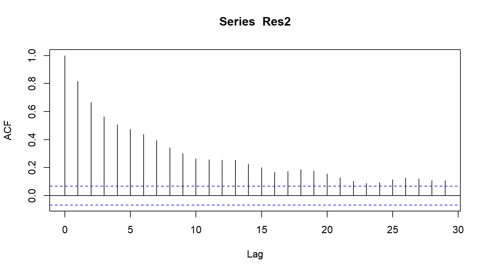
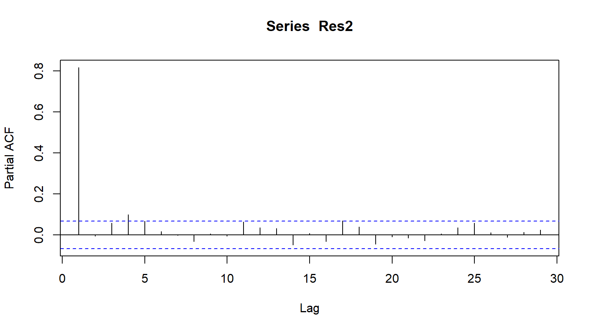

ARIMA modeling using bonds and petrol prices data
Load data and relevant libraries
Inspect data
Rows: 960
Columns: 4
$ b1ret <dbl> 0.002663, 0.000887, -0.000143, -0.000481, 0.000433, 0.000650, -…
$ t30ret <dbl> 0.000178, 0.000111, 0.000108, 0.000068, 0.000161, 0.000249, 0.0…
$ cpiret <dbl> 0.012903, 0.006369, 0.012658, 0.006250, 0.012422, 0.000000, 0.0…
$ date <date> 1942-01-31, 1942-02-28, 1942-03-31, 1942-04-30, 1942-05-29, 19…Once we have data in required format, we can proceed to handle the questions asked about it.
Description of the problem on bonds data
In all the following questions above mentiond data frame is used. In this problem, we are interested in the time series properties of bond returns. We collect monthly data from 1942M01 to 2021M12 for the following variables:
b1retdenotes the 1-year bond return,t30retdenotes the 30-day return on treasury bill,cpiretdenotes the inflation rate.
We will be focusing on the bond return variable b1ret throughout this analysis. Create a second variable b1ret1 from the original variable, where b1ret1 has observations from 1942M01 to 2020M12. We will be using b1ret1 for estimation, and forecast the months of 2021 at the end.
a) Plot the TS variable and comment on its features.

This Figure 1 indicates that around 1980s, these bond returns were highly volatile and from 1970-1990s period is also of high return period. In mid 2010, these returns show very promising growth but then after 2008 crisis bonds return have least volatility closely mirroring 1940s.
b) Estimate a quadratic trend for this TS variable. Write down the equation and test the regression residuals “Res1” for stationary and autocorrelation.
c) Using the ACF and PACF for the stationary version of Res1 to propose an initial ARIMA model for Res1.


Figure 2 and Figure 3 indicates that residuals are not stationary and have significant autocorrelation at lag 1. So we may need to further investigate the model.
d) Provide several ARIMA models and discuss which ARIMA model you would pick as the final model. Explain your reasoning.
Order AIC
1 ARIMA(0,0,0) -7489.192
2 ARIMA(0,0,1) -7649.737
3 ARIMA(0,0,2) -7669.217
4 ARIMA(0,1,0) -7378.844
5 ARIMA(0,1,1) -7795.822
6 ARIMA(0,1,2) -7826.394
7 ARIMA(1,0,0) -7696.349
8 ARIMA(1,0,1) -7804.604
9 ARIMA(1,0,2) -7833.807
10 ARIMA(1,1,0) -7516.357
11 ARIMA(1,1,1) -7822.932
12 ARIMA(1,1,2) -7829.002
13 ARIMA(2,0,0) -7709.165
14 ARIMA(2,0,1) -7830.262
15 ARIMA(2,0,2) -7836.822
16 ARIMA(2,1,0) -7613.721
17 ARIMA(2,1,1) -7825.043
18 ARIMA(2,1,2) -7828.701As per Figure 1 we have observed in the plot that the bond returns are not stationary and have significant autocorrelation at lag 1. So we may need to further investigate the model. We have estimated a quadratic trend model and residuals are not stationary. We have calculated ACF and PACF of residuals and found that residuals are not stationary and have significant autocorrelation at lag 1. We have estimated several ARIMA models and the
Best model comes out to be ARIMA(1,0,1). So we are estimating model as follows:
# A tibble: 3 × 3
term estimate std.error
<chr> <dbl> <dbl>
1 ar1 0.991 0.00545
2 ma1 -0.904 0.0194
3 intercept 0.00322 0.00128e) Forecast using both trend and ARIMA(1,0,1) models
Time Series:
Start = 961
End = 970
Frequency = 1
[1] 0.0005113466 0.0005364218 0.0005612652 0.0005858789 0.0006102650
[6] 0.0006344256 0.0006583628 0.0006820787 0.0007055753 0.0007288547Forecast from quadratic trend model
\[y_t = \beta_0 + \beta_1 t + \beta_2 t^2 + \epsilon_t \tag{1}\]
As Equation 1 suggests, we can use the quadratic trend model to forecast the bond returns.
2.
In this problem, we are interested in examining the factors affecting the petrol prices. Petrol prices in New Zealand is split into three components: importer cost, importer’s margin, and the taxes. We collect the weekly data on the following variables from 2004W16 (week 16) to 2020W23 (week 23):
Dubai denotes the Dubai crude oil prices,
Price denotes the discounted retail petrol price,
Margin denotes the importer’s margin,
Cost denotes the importer’s cost.
We will be focusing on the variable Margin and Cost throughout this analysis. We will also restrict our attention to the period from 2004W16 to 2019W52 for estimation. We will be forecasting the first 23 weeks of 2020 at the end. You can find the dataset titled “PetrolPrices.csv”, use the 5% significance level. Please follow the procedure below for the analysis:
Load and Inspect data
Rows: 840
Columns: 5
$ Week_ending_Friday <chr> "4/23/2004", "4/30/2004", "5/7/2004", "5/14/2004", …
$ Dubai <dbl> 50.74, 52.16, 52.94, 56.55, 59.40, 56.68, 56.13, 53…
$ Cost <dbl> 48.6, 52.2, 53.3, 56.4, 54.3, 53.7, 49.4, 48.2, 47.…
$ Price <dbl> 114.5, 113.0, 117.3, 121.9, 121.3, 123.9, 123.6, 12…
$ Margin <dbl> 13.9, 11.8, 13.8, 14.2, 12.6, 11.8, 13.6, 11.5, 14.…So first there is need to convert Week_ending_Friday as date variable.
Rows: 840
Columns: 6
$ Week_ending_Friday <chr> "4/23/2004", "4/30/2004", "5/7/2004", "5/14/2004", …
$ Dubai <dbl> 50.74, 52.16, 52.94, 56.55, 59.40, 56.68, 56.13, 53…
$ Cost <dbl> 48.6, 52.2, 53.3, 56.4, 54.3, 53.7, 49.4, 48.2, 47.…
$ Price <dbl> 114.5, 113.0, 117.3, 121.9, 121.3, 123.9, 123.6, 12…
$ Margin <dbl> 13.9, 11.8, 13.8, 14.2, 12.6, 11.8, 13.6, 11.5, 14.…
$ date <date> 2004-04-23, 2004-04-30, 2004-05-07, 2004-05-14, 20…Perfect. Now we have date variable and 4 other variables measured as dbl means continuous.
- Plot the margin and cost variables and comment on their features. De termine the order of integration for the two variables. Define the hypotheses and report the relevant test statistic and P-value. Interpret your findings.

- Estimate the model where Margin is regressed on a linear trend and Cost. Write down the equation and comment on the coefficient of Cost. Test the regression residuals “Res2” for stationarity, autocorrelation, and heteroskedasticity.


- Analyse the variable Res2 and propose a final ARIMA model for this variable.
Series: Res2
ARIMA(1,0,0) with zero mean
Coefficients:
ar1
0.8199
s.e. 0.0197
sigma^2 = 3.807: log likelihood = -1753.46
AIC=3510.91 AICc=3510.93 BIC=3520.38